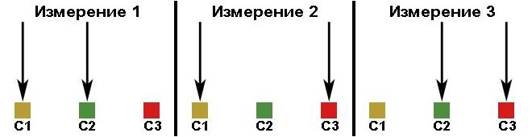

Перейти на главную страницу справочника.
Звуковой пробник для определения виткового замыкания в обмотках трёхфазных электродвигателей.
- Этот звуковой пробник предоставил нашей организации руководитель радиокружка в 1988 году. В первые дни испытаний к показаниям пробника относились с недоверием и постоянно перепроверяли, но через некоторое время пробник стал основным прибором для определения виткового замыкания в обмотках трёхфазных электродвигателей.
Схема звукового пробника.
{kind=link}
- Выше показанная схема отличается от оригинальной. Вместо звукового капсюля пробника установлен динамик WBN, добавлен выключатель S2 и катушка L1. В оригинальной схеме щуп Х2 соединен с коллектором транзистора V1, но при таком подключении проверка обмоток ограничивается электродвигателями до 22 кВт. После добавления в схему катушки L1 и показанном на схеме положении выключателя S2 появилась возможность определения виткового замыкания в обмотках более мощных трёхфазных электродвигателей, а так же проверять обмотки якорей коллекторных двигателей. Замыкая контакты S2 шунтируется катушка L1 и проверяются электродвигатели до 22 кВт. Катушку L1 можно выполнить на каркасе любого размера из имеющегося под рукой провода, число витков увеличивать до появления в динамике звукового сигнала высокого тона при замкнутых щупах Х1 и Х2. Если убрать из схемы выключатель S2 и катушку L1, то для проверки мощных двигателей достаточно в разрыв одного из щупов включить магнитную катушку от пускателя.
- Пробник имеет свои пределы измерения. При большом сопротивлении обмотки, а это двигатели мощностью менее 100 ватт, генерация звукового сигнала не происходит. У двигателей и генераторов с маленьким сопротивлением обмотки, звуковой сигнал срывается, но если увеличить число витков в катушке L1 или добавлять в разрыв одного из щупов от одной до нескольких магнитных катушек от пускателя можно добиться восстановления работы пробника.
- Важно! Конденсаторы С2 и С3 плёночные, С4 и С5 керамические.
Определение виткового замыкания в обмотках трёхфазных электродвигателей.
В исправной обмотке звуковые сигналы измерений 1, 2 и 3 одинаковой тональности.
В неисправной обмотке тональность звуковых сигналов будет разная или звук прервётся.

- Для проверки обмоток электродвигателей малой мощности (до 22 кВт) включите S2.
Присоединяя щупы пробника к выводам электродвигателя как показано на рисунках, выполните три измерения.
При исправном двигателе в динамике будет слышен звук одинаковой тональности для всех трёх измерений. Частота звукового сигнала зависит от сопротивления обмотки, чем больше сопротивление тем тональность ниже.
При наличии виткового замыкания в одной из обмоток, тональность звукового сигнала повысится или звук прервётся и в момент касания щупами к выводам двигателя в динамике будет слышен щелчок.
При обрыве провода в обмотке звука в динамике нет.
Проверяя электродвигатель в сборе, возможна небольшая разница в сигналах пробника. В первом измерении, слегка проворачивая вал электродвигателя, сигнал изменяет тональность, если при втором и третьем измерении сигналы совпадают с первым, обмотка исправна.
Для проверки обмоток электродвигателей более 22 кВт выключите S2.
Проверку обмоток производить так же, как и в электродвигателях до 22 кВт.
- Звуковым пробником можно проверять обмотки однофазных двигателей, трансформаторов, магнитных катушек, якорей коллекторных двигателей.
25.02.2016 г.